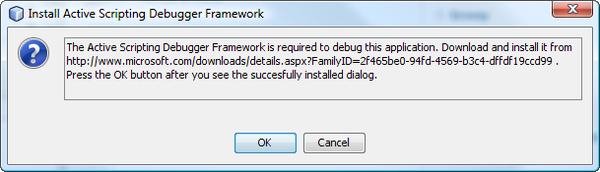
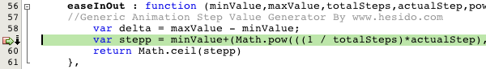
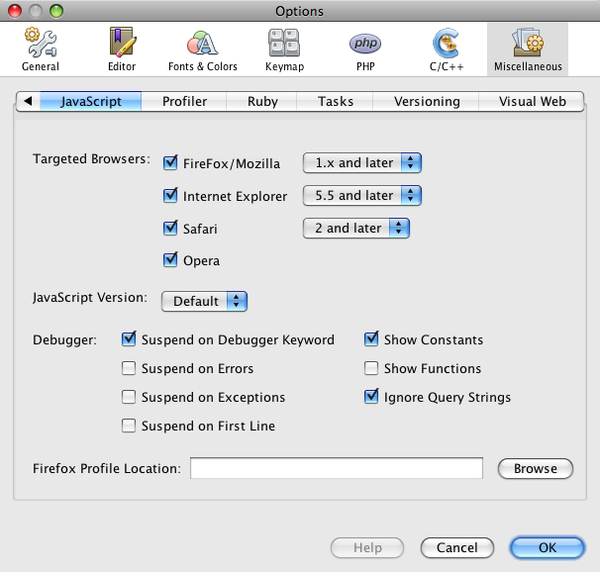

JavaScript Debugger User's Guide
The NetBeans JavaScript debugger provides you with a set of tools that aid
in the process of inspecting, monitoring and editing JavaScript code. You
can use the debugger to identify errors, or step through execution and explore
the state of your application at any given moment. Numerous debugging windows
are also at your disposal, affording an intuitive interface to examine variable
and expression values, threads, sessions, breakpoints and more.
The NetBeans JavaScript debugger offers a common user experience for both
Firefox and Internet Explorer. Debugger support for FireFox is based on
Firebug, whereas for Internet Explorer
it is based on the Active
Scripting debugger framework.
Contents
To complete this document, you need the following software and resources.
Notes:
- The Firebug add-on and NetBeans extensions are included in the IDE. When
you run the debugger for the first time, the IDE checks for and installs
these into your browser. If you are using Internet Explorer, the IDE
prompts to you download and install the
Active
Scripting debugger framework.
- The NetBeans JavaScript debugger is compatible with Internet Explorer versions 6
and 7, and Firefox version 2.0.0.x and 3.
- For Internet Explorer users, the debugger is supported in Windows XP SP2
and Vista.
Enabling and Disabling the Debugger
By default, the JavaScript debugger is disabled in the IDE. When starting
the debugger for the first time however, the IDE presents you with a
dialog that allows you to activate it for your browser.
At all times, you can activate or disable the debugger from the Project Properties
window.
- In the Projects window, right-click your project and choose Properties.
- In the Project Properties dialog, select the Debug category.
- Toggle the
Debug Web Application (Client side JavaScript) option.
- Select the browser you plan to use (Firefox or Internet Explorer).
- Click OK to close the window.
Note: It is possible to run both server-side
and client-side debuggers concurrently. You are able to switch between debugging
sessions using the Sessions Window. If you run both
sessions, and want to terminate these sessions, you will need to click the Finish
Session ( ) button in the debugger
toolbar for as many sessions as are running.
Starting the Debugger for the First Time
When you run the debugger for the first time, the IDE first checks if you have
the appropriate resources and extensions installed in your browser.
Internet Explorer
- Start the debugger by right-clicking your project in the Projects window
and choosing Debug.
- In the dialog box that displays, select the
Server side Java with client
side JavaScript in the selected browser option. Then select Internet Explorer.
Note: You can also disable the server-side debugger, or disable the
client-side debugger at a later stage from your project's Properties dialog box (In
the Projects window, right-click the project node and choose Properties). See
Enabling and Disabling the Debugger.
- Click Debug. When you select the client-side debugging option for Internet Explorer and
click Debug, the IDE first ensures that you have the Active
Scripting debugger framework installed. If it have not been installed, you are
prompted to download and install the framework.

Your browser is launched to the location on Microsoft's website where you can
download the framework. Download and install the framework.
- Once you receive confirmation that the Active Scripting debugger framework has been
installed, return to the IDE and click OK. The IDE checks if you have the NetBeans
Internet Explorer extension registered in your browser. If not, a dialog displays,
prompting you to enable the IDE to install the NetBeans Internet Explorer extension.
- Click OK. The IDE registers the extension in your browser, the debugging session is
initiated, and the welcome page of the application you are running the debugging
session on displays in your browser.
- Return focus to the IDE. The debugger toolbar is displayed
above the editor. All icons of the toolbar are activated when the code becomes
suspended. The project index page opens in the IDE's editor.
By default, numerous windows are activated in the lower region of the IDE, including
the Watches, Local Variables, and
Call Stack windows. The debugger console initially displays
in the Output window, indicating that a debugging session has been started. The debugger
console can be used during a debugging session to show evaluation errors, thrown exceptions,
and other information.
Firefox
- Start the debugger by right-clicking your project in the Projects window
and choosing Debug.
- In the dialog box that displays, select the
Server side Java with client
side JavaScript in the selected browser option. Then select Firefox.
Note: You can also disable the server-side debugger, or disable the
client-side debugger at a later stage from your project's Properties dialog box (In
the Projects window, right-click the project node and choose Properties). See
Enabling and Disabling the Debugger.
- Click Debug. When you select the client-side debugging option for Firefox and click Debug,
the IDE ensures that you have the Firebug add-on and NetBeans Firefox extension
installed in Firefox. If these have not been installed, the IDE attempts to
install them.
Make sure that Firefox is shut down before clicking OK. If not,
the browser cannot load with the add-on and extension activated, and you will
need to restart the browser manually, then rerun the debugger.
- Click OK. Both components are installed and the browser starts, displaying
the welcome page of the application you are running the debugging session on.
Once Firebug and the NetBeans Firefox extension have been successfully
installed, their icons display in the lower right corner of the Firefox
browser:
- Firebug:
- NetBeans Firefox extension:
Upon clicking on the NetBeans Firefox extension icon, you can view a
dialog box that contains details about the extension.
- Return focus to the IDE. The debugger toolbar is displayed
above the editor. All icons of the toolbar are activated when the code becomes
suspended. The project index page opens in the IDE's editor.
By default, numerous windows are activated in the lower region of the IDE, including
the Watches, Local Variables, and
Call Stack windows. The debugger console initially displays
in the Output window, indicating that a debugging session has been started. The debugger
console can be used during a debugging session to show evaluation errors, thrown exceptions,
and other information.
Running the Debugger
You can begin a debugging session either on a project, or on an individual
file. Provided you have an Internet connection, you can also point the debugger
to any URL online, and inspect JavaScript resources made publicly available.
Debugging a Project
You can run the JavaScript debugger on an entire project.
- Right-click the project node in the Projects window and choose Debug. The
index file is opened in the editor if the debugger is not suspended.
Note: If the project you want to debug is set
as the main project, you can also choose Debug > Debug Main Project from
the IDE's main menu, or choose the Debug Project icon
( ) in the main toolbar. To set a main project,
right-click the project you want to set and choose Set as Main Project.
Debugging a File
You can run the debugger on an individual file, such as an HTML or JSP file.
- Right-click the file in the Projects window and choose Debug File.
Likewise, you can choose Debug > Debug File from the IDE's main
menu. The file being debugged opens in the editor if the debugger
is not suspended.
Debugging an External Source
If you are connected to the Internet, it is possible to run the debugger
on an external URL. This enables you to view and examine JavaScript code
included in pages made publicly available.
- Choose Debug > Attach Debugger from the IDE's main menu.
- In the Attach Debugger dialog, select Web Page Debugger (JavaScript) from the
Debugger drop-down list.
- Enter the URL to the page you want to run the debugger on, then click OK.
When debugging an external source, you can use the Sources window
to view the URL paths of all resources being used. You can also use the editor
and toolbar to step through and examine code on a line-by-line basis.
Working with the Toolbar and Editor
The editor enables you to view the contents of files. So when you are debugging, the
editor, in combination with the debugger toolbar, provides you with the ability to
step through your code during execution in order to see how the contents of your files
affect what is happening in a browser.
Note: Pages generated from server-side scripting technologies,
such as ASP, JSP, PHP, and Ruby, are rendered in read-only format ([r/o], as
indicated in the tab of a file opened in the editor). Server-side scripts dynamically prepare
content to be displayed in the client browser. The IDE's editor displays these files according
to the content in your browser's cache.
Using the Debugger Toolbar
When you run a debugging session, the debugger toolbar displays above the editor.
Depending on whether you configured the debugger to suspend under certain conditions
(You can specify debugging settings in the Options window - see Configuring
the Debugger.), the toolbar displays either in an active or suspended state.
| Active State: |
|
| The debugging session is active, and debugging windows contain data
based on the state of files and scripts loaded in your browser. You can click
Pause to suspend the debugger on the next JavaScript call. |
| Suspended State: |
|
| The debugging session is suspended. If execution is stopped
at a specific point in your files, the editor indicates its line location
with a green background and arrow badge ( ) in the left margin. You can use the toolbar to
step through your code. |
The toolbar provides you with the following actions:
| Finish Session
( ) |
Finish debugging session |
| Pause
( ) |
Suspend debugging session |
| Resume
( ) |
Resume debugging session |
| Step Over
( ) |
Step over an execution statement |
| Step Into
( ) |
Step into a function call |
| Step Out
( ) |
Step out of the current function call |
| Run to Cursor
( ) |
Run execution to the position of the cursor |
Note: When there are multiple JavaScript statements on
a single line, choosing Step Over in Internet Explorer results in progressing to the
next statement within the same line. In the case of FireFox, the debugger executes all
statements on a given line, then moves to next line.
Setting Breakpoints
Set breakpoints in your files to tell the debugger where to stop during execution.
You can set breakpoints in HTML and JavaScript files. You can also set breakpoints
within JavaScript code of any read-only ([r/o]) files that the IDE has
accessed from your browser's cache.
To set a breakpoint, click in the left margin of the editor on the line
where you want the breakpoint to be set.
You can remove the breakpoint by clicking on the breakpoint badge
( ).
It is also possible to temporarily disable breakpoints. To do so, right-click
on a breakpoint badge and choose Breakpoint > ✓ Enabled. This toggles the
breakpoint into a disabled state, resulting in a grey badge
( ) displaying in the left margin.
If the debugger encounters a breakpoint upon executing, it stops on the breakpoint,
enabling you to examine variables in the debugging windows, and step through
any code following the breakpoint.

It is also possible to customize breakpoints, by setting a hit count and/or
conditional expression, so that the debugger stops on the breakpoint only
when the hit count is met, or the conditional expression evaluates to true.
Instructions on customizing breakpoints are also discussed below, under
Breakpoints window. To customize a breakpoint,
right-click on a breakpoint badge in the left margin of the editor, and choose
Breakpoint (or Disabled Breakpoint) > Properties.
Examining Tooltips
When the debugger is suspended during a debugging session, you can hover your mouse
over a JavaScript identifier in the editor to display a tooltip. If the identifier
is valid in the selected call stack frame, its value is displayed. You can also select
JavaScript expressions. The value of the expression in shown in a tooltip.
Examining the Debugger Windows
The IDE provides you with numerous windows that form an integral part of the
JavaScript debugger. When you run a debugging session, the debugger windows
enable you to keep track of variable and expression values as you step through
code, examine the call stack of an executing thread, verify source URL's, and
switch between sessions if you are running concurrent debugging sessions.
All debugger windows can be accessed from the IDE's Window > Debugging menu.
Once a debugging session is active, you can begin making use of the debugger
windows.
Sessions Window
The Sessions window shows any debugging sessions that are currently active.
When you start a JavaScript debugging session, you can see an entry for the
JavaScript debugger in the Sessions window.
The NetBeans IDE also enables you to run multiple debugger sessions
simultaneously. For example, if you are working in a Java-based project and
have enabled the client-side as well as the server-side debugger, you can
identify two sessions listed in the Sessions window.
The current session (i.e., the session that you can control using the debugger
toolbar) is indicated by the more prominent icon (
). To switch sessions, you can double-click on the
session you want to make current, or right-click a non-current session and choose
Make Current.
Note: It is not recommended to switch sessions if the
session you are currently working in is suspended.
You can also use the right-click pop-up window to terminate a session (right-click
and choose Finish), or toggle between debugging the current thread or all threads
within the session (right-click and choose Scope > Debug All Threads or Debug
Current Thread).
Local Variables Window
When the debugger is suspended, the Local Variables window displays the local variables
of the current window object for the selected callstack frame. It shows
the two top nodes:
scope: The scope of the function call for the current
frame. All properties listed represent variables you can fetch under the current scope.this: The value of the this keyword for the
current frame. All properties listed represent the current reference to this.
scope and this are terms that belong to JavaScript
syntax and should be properly understood in order to make use of the Local Variables
window. To gain more insight, see the following articles on this
and scope.
The scope node is always expanded. Aside from showing local variables and parameters of the
function call associated with the selected callstack frame, the following additional nodes
are shown:
arguments: actual arguments as opposed to the declared
formal parametersarguments.length: the number of actual arguments passed
into the functionarguments.callee.length: the expected number of arguments
as declared in the function signatureparent scope: information about the scope outside of the
scope of the current function call
As you step through the code, the values of some local variables may change. Such local variables
are shown in bold in the Local variables window.
You can also click directly into the Value column and manually change variable values.
Notes:
- For IE users, due to a limitation in the Active Scripting Debugger API's,
it is not always possible to determine the variable type. In such cases,
variables displayed in the Local Variables window indicate that they are
of the generic type
{Object}.
- The
parent scope node is not available in the Local Variables
window for IE users.
Watches Window
The Watches window enables you to keep track of the values of specific expressions
as you step through code.
You can add watches by right-clicking in the Watches window or the editor and
choosing New Watch from the popup menu. To remove a watch, right-click and
choose Delete from the popup menu.
In the editor, first highlight the expression you want to create a
watch for, then right-click and choose New Watch. The highlighted expression
is automatically added to the dialog text field.
You can add arbitrary JavaScript expressions to the
Watches window. The debugger evaluates the watch expression in the selected
callstack frame and if successful, it displays the value of the expression.
Expressions can be variables, such as those listed in the Local Variables window,
or any JavaScript expression that can be evaluated and provide a value relevant
to the debugging session.
Call Stack Window
The Call Stack window lists the sequence of calls made during execution. When
the debugger is suspended, the Call Stack window shows the sequence of function
calls (i.e., the call stack). On initial suspension, the top-most stack
frame is selected automatically.
You can double-click on a call stack frame to select it, then explore any
variable or expression values for that frame in the Local
Variables and Watches windows.
The Call Stack window contains two columns:
- Name: The name of the function that was called
- Resolved Location: The URL indicating where the
function was called, including the file name and line number
You can also navigate directly to the location where the call took place
by right-clicking in the Call Stack window and choosing Go to Source.
The file that contains the location of the call stack frame opens in the
editor with the cursor positioned on the line which triggered the call.
The editor also provides highlighting features for call stack frames, so
previous frames in the call stack are indicated by a purple badge
( ) in the left margin, and display with
a light purple background.
Threads Window
The Threads window lists the window and frames of pages existing in the debugging
session. In JavaScript, each window or frame represents an execution context. So,
if you are running the debugger on a file that includes multiple frames, the
Threads window displays the structure of the page, listing each frame as an individual
thread. The Threads window also details the current state of each window and frame,
and supplies a reason for suspension.
Similar to other debugging windows, you can employ the Go to Source option to
navigate directly to the path or URL indicated in the Name column of your selection.
Right-click a window or frame, and choose Go to Source from the pop-up menu.
Sources Window
The Sources window displays all the files and scripts loaded for the debugging
session. They are listed in the order that they are loaded by the browser.
For JavaScript files in your project, the debugger shows the path to the file on
your computer. For remote resources, the URL of the file is shown. As with other
debugging windows, you can employ the Go to Source option to navigate directly to
the path indicated in your selection. Right-click a source file, and choose Go to
Source from the pop-up menu. The file opens in the editor for you to view.
If you are working with local files, the Sources window differentiates between the
actual source file, and the rendered source file contained in your browser's cache.
You can view the file contained in your browser's cache by choosing Go to Client
Source. The file opens in the editor in read-only format
Breakpoints Window
You can use the Breakpoints window to view all breakpoints that you have set in the IDE.
From the Breakpoints window you can enable or disable individual breakpoints by toggling
the option beneath the Enabled column. You can also customize breakpoints by right-clicking
a breakpoint and choosing Customize. The Breakpoint Customizer enables you to set a hit
count and/or conditional expression.
It is possible to set the condition for the hit count so that the debugger breaks when the
hit count is equal to, greater than or equal to, or a multiple of a given number.
When a conditional expression is specified, the debugger stops on the breakpoint only
if the expression evaluates to true. Likewise, if both a conditional
expression and a hit count condition are specified, the breakpoint is acknowledged only
if both evaluate to true. You can use !(condition) to negate
the condition. A customized breakpoint is indicated by a  badge in the Breakpoints window and left margin of the editor.
badge in the Breakpoints window and left margin of the editor.
Configuring the Debugger
The NetBeans IDE provides you with the ability to configure the JavaScript debugger.
You can adjust the way the debugger behaves using options available in the JavaScript
pane of the IDE's Options window. To open the Options window, choose Tools > Options
(NetBeans > Preferences on Mac) from the main menu. Then choose Miscellaneous >
JavaScript.

Debugger options include the following:
- Suspend on Debugger Keyword: Prompt the debugger to suspend by
inserting the
debugger; statement into your JavaScript code.
- Suspend on Errors: Prompt the debugger to suspend when encountering
any JavaScript errors.
- Suspend on Exceptions: Prompt the debugger to suspend when encountering
any JavaScript exceptions. For Internet Explorer, the debugger suspends as it would for
a breakpoint, but with a status of
EXCEPTION. The actual message for the
exception is shown in the Console for the current debugging session. For Firefox, exceptions
are listed in the Local Variables window, detailing the output
message beneath the Values column.
- Suspend on First Line: Prompt the debugger to suspend on the first
line of a file included in a debugging session. For IE users, the debugger stops on the
first JavaScript statement to be executed at runtime. For FireFox users, it stops on the
first line of JavaScript code.
- Show Constants: Specify whether to display constants and their values
in the Local Variables window (When enabled, constant values can
clutter the window.)
- Show Functions: Specify whether to list functions in the Value column of
the Local Variables window (When enabled, functions can clutter
the window.)
- Ignore Query Strings: Specify whether to ignore URL query strings for
breakpoints. For example, when enabled, if a breakpoint is set on a line in
http://www.foo.com, the debugger will suspend in the event that the requested
URL is http://www.foo.com?search=34. This option can be useful if query
strings are dynamically added.
See Also
For more information about Ajax and Java technology on netbeans.org,
see the following resources:
{kind=link}
{kind=link}
{kind=link}
{kind=link}
{kind=link}
{kind=link}
{kind=link}
{kind=link}
{kind=link}
{kind=link}
{kind=link}
{kind=link}
{kind=link}
{kind=link}